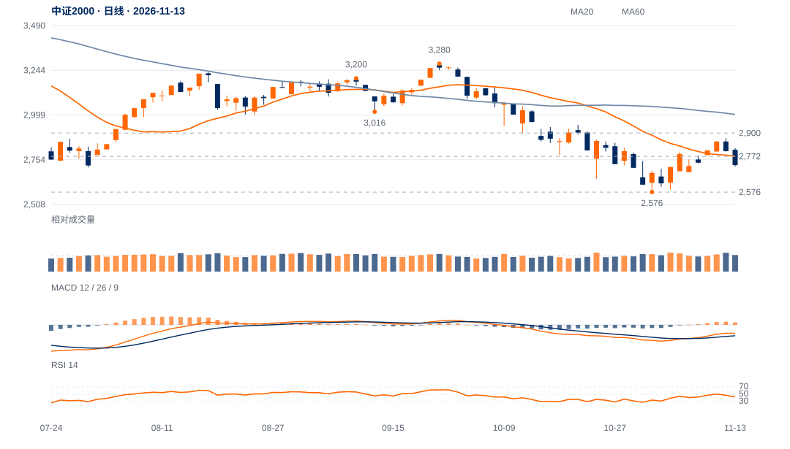

阻力区给出相反跟进
11日收2853.22，12日盘中高2872.13却收2801.02，量比1.17、收盘位置4%；13日再收2724.74，位置9%。上方成交未带来突破保持。
12日上试后的弱收盘得到13日继续下跌确认，需求未保持的解释优于吸收突破。短线先核2700—2716，2737—2772已成为反抽必须收回的区域。

查看大图 ↗先收回2737—2772，再观察2853保持；原2900及2788回测标准不变。
2700进一步失守提高2576测试风险；2576才是原结构失效。
11日收2853.22，12日盘中高2872.13却收2801.02，量比1.17、收盘位置4%；13日再收2724.74，位置9%。上方成交未带来突破保持。
此前短线跟进领先的判断已被两日回落否定。当前20日相对沪深300比值仍跌1.38%，也不支持将短期一度领先推广为持续优势。
11日已触及2845.05的V形识别参考，不能删除这个触及事件；但原2900突破并回测不失2788没有触发。现价仅回收9月左高至低点价差约21.1%。
较上周收盘仍微涨约0.22%，2576低点尚在；本轮并非所有尺度均已向下突破。若反抽重新保持2772，偏弱解释应降级。